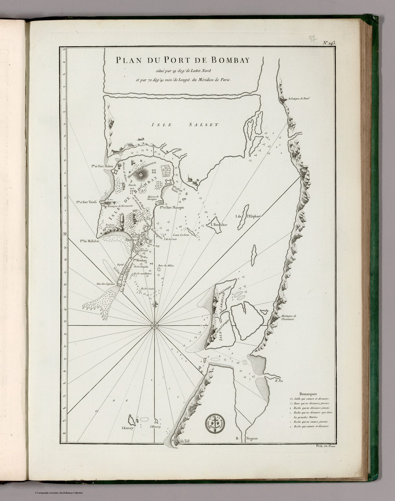

← Home Ground: Bombay and the Deccan

A posthumously maintained chart
Jean-Baptiste d’Après de Mannevillette’s Neptune Oriental first appeared in 1745 and was enlarged in 1775. After his death, the French naval hydrographic office continued to update and reissue its charts. The impression shown is the Dépôt Général de la Marine’s issue of 1810, not a chart newly drawn in that year.
The harbour as measured water
The plan is organised by the needs of navigation: soundings, shoals, channels, anchorages, coastal forms and explanatory remarks. Bombay’s urban and territorial significance is secondary to the safe movement of a ship through its approaches.
The gaze
A French naval office kept a plan of a British port in print through the Napoleonic wars, which says something about how hydrographic knowledge moved. Soundings taken by one navy served whichever ship next entered the approaches, and the Dépôt evidently thought Bombay worth reissuing in 1810. Of the city itself the plan records only what a pilot needs: the shape of the shore and the depth of water before it.
In the Deccan timeline
Bassein, 1739 (February–May 1739) · Poona and the Treaty of Bassein (25 October – 31 December 1802)